Аудит основной надписи
Как заполняется штамп чертежа: надстройка ЕСКД и MProp, детали и сборки, все форматки листа 1
Дата13.09.2026
РежимТолько копии, код не менялся
Прогон штампаstamp_matrix_20260913_195225
Прогон надписейformat_audit_20260913_200535
Связанный планПлан согласования ЕСКД с SWPlus
ИтогШтамп неконсистентен, 8 причин
Коротко
Вид штампа сейчас зависит от того, кто последним записал свойства — надстройка или MProp — и от того, деталь это или сборка. Сами форматки между собой согласованы: все девять форматок листа 1 дают одинаковый результат. Проблема в том, что форматки и две программы рассчитаны на разные правила записи.
- После MProp наименование опускается на 1,4–2,8 мм, масса ложится почти на нижнюю линию, пропадает «Разраб.». Так на всех 9 форматках, у деталей и у сборок.
- У сборки наименование после MProp наезжает на «Сборочный чертёж» (наложение 4,6 мм). У детали вторая строка пустая, поэтому наложения не видно.
- Длинное наименование MProp пишет одной строкой шрифтом 5: 98 мм при ширине графы 70 мм. Надстройка переносит на две строки, и всё помещается.
- Лёгкая деталь у надстройки получает массу «0,01», у MProp — «9.4 г».
- Главная причина. 08.09.2026 форматки перерисованы: шрифт Arial Narrow заменён на GOST type A, наименование стало 5 мм вместо 3,5, надписи переставлены под однострочный текст надстройки. Разметка MProp рассчитана на прежнюю геометрию и в новой сползает.
- Что делать. Утвердить один эталон штампа: одна разметка (MProp) и форматки, выставленные под неё. Проверять автоматически прогоном штампа на всех форматках, для деталей и сборок, после надстройки и после MProp.
Как проверяли
- Документы. Копии корпуса А в отдельной папке прогона:
- пластина с дробью из библиотеки;
- сборка «ПРТИ.468211.100 СБ Кондуктор сварочный»;
- планка с исполнениями;
- кронштейн с длинным наименованием;
- болт как обычная деталь;
- новая деталь массой 9,4 г.
- Состояния каждого документа:
- сохранение с надстройкой;
- MProp «применить без правок» — тот же вызов, что делает DProp;
- сохранение;
- MProp повторно;
- сохранение;
- MProp из чертежа.
- Что снималось в каждом состоянии. Свойства по уровням, текст и габарит каждой надписи штампа относительно граф формы 1 (ГОСТ 2.104), PDF и снимок штампа.
- Форматки. Пластина и болт прогнаны по всем 9 форматкам листа 1, с записью надстройки и с записью MProp, а также по историческим версиям A3-A-1 и A4-P-1: оригинал SWPlus 2018, коммиты 11a6d98 и 2349909.
- Параметры надписей через API SolidWorks — гарнитура, высота, интервал, выравнивание, позиция:
- 18 текущих форматок и их версии до 08.09;
- оригиналы SWPlus;
- формы SpecEditor;
- встроенная форматка шаблона чертежа;
- форматки внутри фикстур-чертежей;
- шаблоны Master.
«Смещение центра» ниже — это расстояние по вертикали от середины текста до середины графы: плюс — выше, минус — ниже.
Что видно на штампе
Деталь: надстройка → MProp
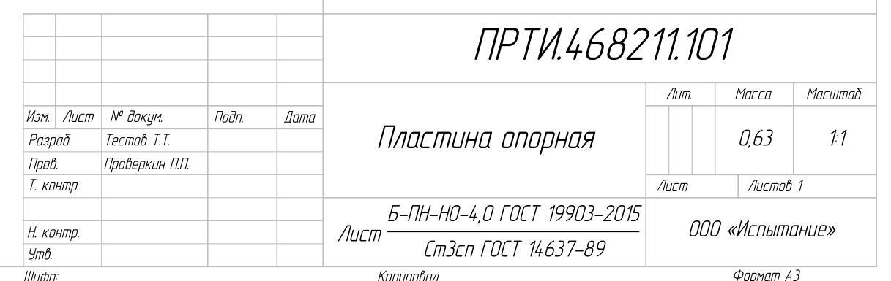
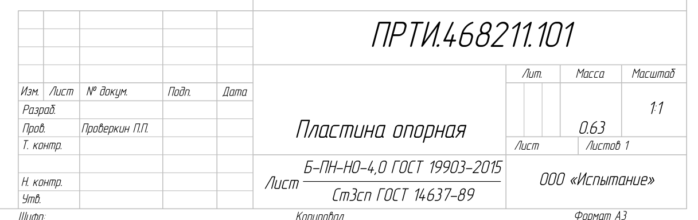
В свойствах MProp заменил «Наименование_ФБ» на <FONT size=4> ⏎<FONT size=5>Пластина опорная и «Масса_ФБ» на формулу SW-Mass с пустой строкой сверху. Он поставил «Единицы» = True, стёр «Конструктор» и создал пустые «Сборка1_ФБ» и «Сборка2_ФБ». Надстройка при сохранении вернула «Конструктор», повторный MProp снова его стёр. Это переписывание по кругу подтверждено на всех документах.
Сборка: надстройка → MProp
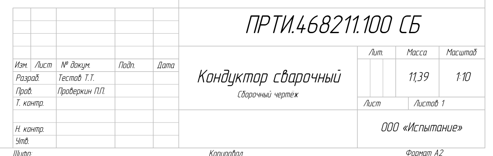
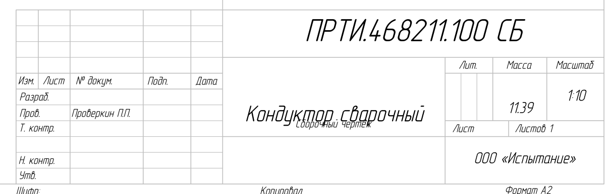
У сборки с «СБ» в имени файла MProp поставил «RenameSWP» = 1 (ручное обозначение): после этого надстройка перестаёт вести обозначение. Ещё он создал пустой «Материал_ФБ». Это разные последствия для деталей и сборок из-за одного и того же нажатия.
Длинное наименование
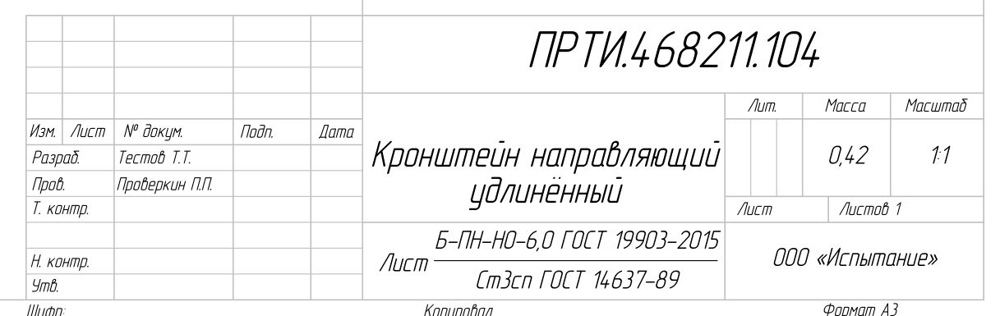
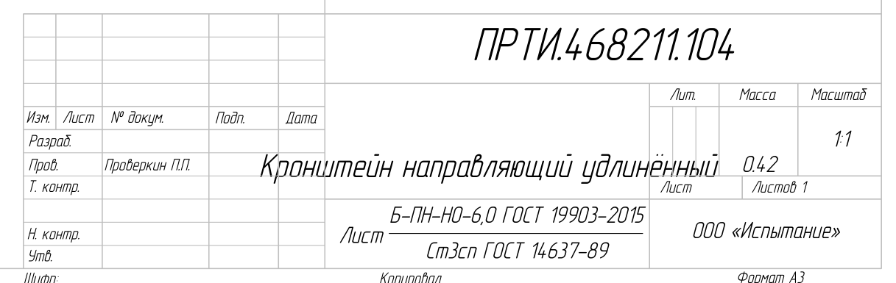
Лёгкая деталь и болт как обычная деталь
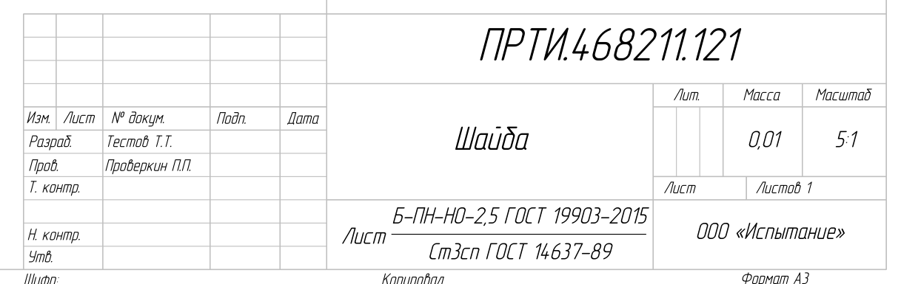
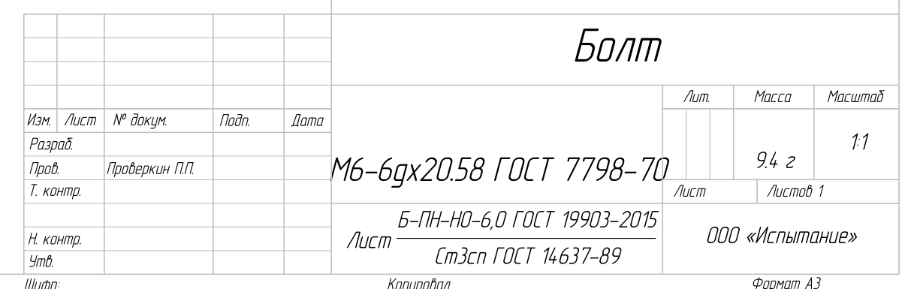
Надстройка считает, что в имени «Болт М6-6gх20.58 ГОСТ 7798-70» обозначения нет, и пишет его целиком в наименование на двух строках. MProp делит имя по первому пробелу.
Корень проблемы: две разметки × две геометрии
Одна и та же пластина на двух версиях форматки A3-A-1: оригинал SWPlus 2018 года и текущая после 08.09. Каждая форматка правильно показывает только «свою» запись.
| Запись надстройки | Запись MProp | |
|---|---|---|
| Оригинал SWPlus 2018 Arial Narrow |
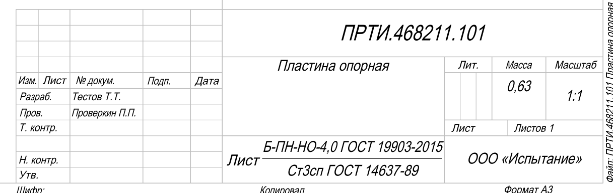 |
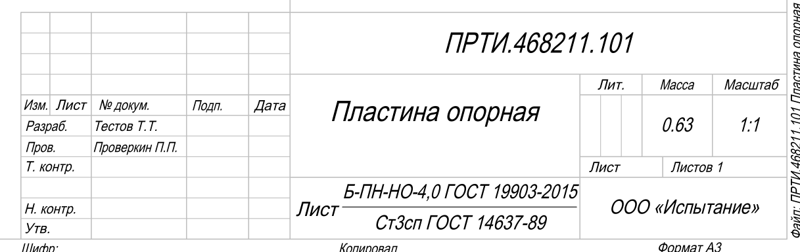 |
| Текущая (с 08.09) GOST type A |
 |
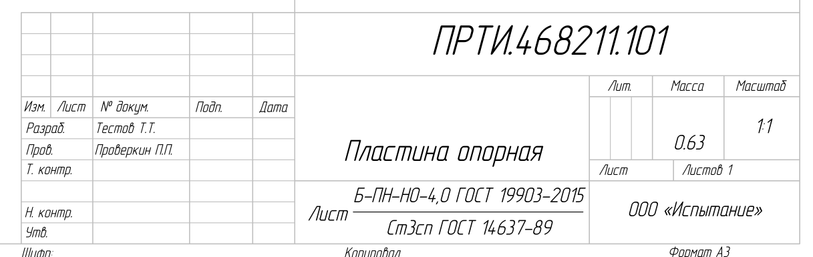 |
Параметры надписей по версиям (API SolidWorks)
| Надпись | SWPlus 2018 и 11a6d98 (до 08.09) | Текущие 18 форматок, шаблон чертежа, фикстуры | Шаблоны Master |
|---|---|---|---|
| Гарнитура всех надписей | Arial Narrow | GOST type A | GOST type A |
| MYPRP0 — обозначение (графа 2) | 5 мм, y 55,1 | 7 мм, y 56,8 | 7 мм, y 56,8 |
| MYPRP4 — наименование (графа 1) | 3,5 мм, y 45,08, интервал 2 | 5 мм, y 36,0, интервал 2 | 5 мм, y 36,0 |
| MYPRP3 — «Сборочный чертёж» (графа 1) | 2,5 мм, y 27,52 | 2,5 мм, y 27,52 | 2,5 мм, y 27,52 |
| MYPRP15 — масса (графа 5) | 3,5 мм, y 38,53 (2018) / 34,53 (11a6d98), интервал 2 | 3,5 мм, y 34,7, интервал 1 | 3,5 мм, y 35,0, интервал 2 |
| MYPRP16 — материал (графа 3) | 1,8 мм, y 19,29 | 1,8 мм, y 19,2 | 1,8 мм, y 19,2 |
Все 9 текущих форматок листа 1 между собой одинаковы: позиции смещены только на ширину листа, шрифт и высоты те же. Встроенная форматка шаблона «Чертеж.drwdot» и форматки внутри фикстур A-10 и A-11 совпадают с текущими. Формы SpecEditor тоже переведены на GOST type A; оригиналы были Arial Narrow. Исключение — A4-A-1 коммита 11a6d98: она уже была в новой геометрии и, судя по всему, послужила образцом для правки 08.09.
Все форматки листа 1: смещение центра текста
| Графа | Запись надстройки (9 форматок) | Запись MProp (9 форматок) | Оригинал SWPlus, запись MProp |
|---|---|---|---|
| 2 — обозначение | −0,3…+0,4 | −0,2…+0,6 | −0,4 |
| 1 — наименование, одна строка | +0,1…+0,9 | −2,8…−1,4 | +6,2 |
| 1 — «Сборочный чертёж» | −6,3 (сборка) | −7,5…−7,2, наложение 4,1–4,6 мм | −7,5, без наложения |
| 5 — масса | +0,2…+0,9 | −1,8…−0,6; до линии 1,4…2,8 мм, в отдельных состояниях 0 | +1,9 |
| 3 — материал, дробь | +0,3…+1,6 | по PDF в графе; габарит API после MProp недостоверен | +0,5 |
| 1 — длинное наименование | в графе (две строки) | вне графы на всех 9 (71–98 мм) | вне графы |
Детали и сборки: почему по-разному
| Что | Деталь | Сборка | Почему |
|---|---|---|---|
| Графа 1 | Одна строка; вторая надпись пустая | Наименование и «Сборочный чертёж» — две надписи с жёсткими позициями | Графа 1 собрана из двух надписей (MYPRP4 и MYPRP3). Центр наименования не может быть одновременно правильным для одной строки и для пары строк. |
| После MProp | Наложение есть, но вторая строка пустая — не видно | Наименование наезжает на «Сборочный чертёж» | Разметка MProp опускает наименование на 2,6–2,8 мм. |
| Код «СБ» и вторая строка | — | Надстройка: « СБ» и «Сборочный чертёж» (ё, без разметки). MProp и SpecEditor: «СБ» и разметка с «чертеж» | Разные форматы у разных программ (план, Н-09, Н-10) |
| Ручное обозначение | «RenameSWP» = 0 | «RenameSWP» = 1 после MProp | MProp не узнаёт код «СБ» в имени файла (план, Н-05, Р-9) |
| Графа 3 | Дробь из библиотеки | Пусто; MProp создаёт пустой «Материал_ФБ» | Материала у сборки нет — это верно, но свойство появляется только после MProp |
Причины
1Две разметки для одних и тех же графкритично
Надстройка пишет текст без служебных строк. MProp добавляет пустую мелкую строку сверху, шрифт 5 для наименования и двухстрочную запись массы. Вид штампа зависит от того, кто писал последним. DProp запускает MProp сам.
stamp_matrix: S1 против S2…S6 для всех документов; FrmMProp:2636–2659, 2832–2862; FrmDProp:550
2Форматки 08.09 перерисованы под надстройкукритично
Коммит 2349909 (08.09.2026):
- гарнитура Arial Narrow → GOST type A;
- обозначение 5 → 7 мм;
- наименование 3,5 → 5 мм, надпись опущена с y 45,08 до 36,0;
- у массы интервал 2 → 1.
Разметка MProp рассчитана на старую геометрию и в новой сползает вниз.
format_audit: SWPlus 2018 / 11a6d98 против текущих; git log «Основные надписи»
3Графа 1 из двух надписей с жёсткими позициямивысоко
У детали строка одна, у сборки две. Одна геометрия не центрирует оба случая. При разметке MProp строки налезают друг на друга.
MYPRP4 y 36,0 и MYPRP3 y 27,52; наложение 4,1–4,6 мм
4Длина строки ничем не ограниченавысоко
GOST type A заметно шире Arial Narrow: одна строка шрифтом 5 выходит за 70 мм уже примерно при 23 знаках. MProp не переносит наименование. Имя материала одной строкой (когда вместо дроби стоит формула «материал SW») тоже вылезает.
long_name S2: 98,3 мм; bolt S2: 71,4 мм; скриншот владельца «Болт»
5Масса лёгких деталей у надстройки теряетсявысоко
Килограммы с двумя знаками дают «0,01» для 9,4 г. У MProp — «9.4 г».
light_part S1 / S2; bolt S1 «0,01»
6Положение массы после MProp нестабильносредне
С одним и тем же текстом нижний отступ массы меняется между состояниями: 1,4 мм ↔ −0,2 мм, высота габарита 8,6 ↔ 10,2 мм. Служебная пустая строка шрифтом 1 то учитывается, то нет.
plate S2 −0,22 / S3 1,41 / S5 −0,22
7Старые чертежи хранят свою форматкусредне
Встроенная форматка чертежа — копия той версии, с которой он создан или перезагружен. Архивные чертежи до 08.09, скорее всего, на Arial Narrow. Замена файла .slddrt их не меняет, нужна перезагрузка форматки, как в DProp.
format_audit: шаблон и фикстуры совпадают с текущими; оригиналы — Arial Narrow; архив не проверялся
8Шаблоны Master отличаются в надписи массысредне
Интервал 2 и y 35,0 против 1 и 34,7. Пересоздание форматок через Master откатит массу.
format_audit: Master_Template_Sheet1; план, Н-13
Не воспроизвелось: окно «Не удалось определить вид из свойств листа» (план, Н-29). У всех чертежей прогона свойство листа «По умолчанию», и MProp из чертежа отработал без окна. Окно появилось на вашем чертеже, созданном вручную. Нужно прочитать его значение — это спайк к правке Н-29.
Что делать: эталон штампа
Цель: у детали и у сборки, на любой форматке, после надстройки и после MProp штамп выглядит одинаково, и каждый текст стоит в своей графе на заданном месте.
- Утвердить эталон штампа. Для каждой графы — шрифт, высота, строки и точка центра:
- шрифт GOST type A (ГОСТ 2.304);
- обозначение 7 мм по центру графы 2;
- масса 3,5 мм по центру графы 5, граммы и килограммы;
- материал — дробь или одна строка по центру графы 3;
- раскладка графы 1 — решение ниже.
- Одна разметка. Надстройка пишет ровно так же, как MProp (решения плана Р-1…Р-3). Тогда вид не зависит от того, кто писал последним, и автоприменение из DProp ничего не меняет.
- Форматки под эталон. Надписи MYPRP0, MYPRP3, MYPRP4, MYPRP15, MYPRP16 переставляются так, чтобы разметка MProp давала эталон:
- во всех 18 форматках;
- в шаблоне чертежа;
- в формах SpecEditor;
- в шаблонах Master.
- Перенос. Наименование длиннее границы (для GOST type A 5 мм около 22 знаков) — две строки, как уже решено в Р-2, с правкой MProp. Материал одной строкой длиннее примерно 35 знаков — две строки, в многострочной форме MProp.
- Масса — по правилу MProp: до 0,1 кг в граммах с «г» (решения Р-1, Р-7). Одновременно проверить устойчивость положения служебной строки (причина 6); при необходимости поправить интервал надписи массы.
- Существующие чертежи. Пакетная перезагрузка форматок, как «Перезагрузка форматки» в DProp, с резервными копиями и отчётом. Запускается только по решению владельца.
- Приёмка — автотест штампа. Прогон, выполненный в этом аудите, превращается в тест:
- все форматки листа 1;
- деталь, сборка;
- короткое и длинное наименование;
- килограммы и граммы;
- дробь и одна строка;
- надстройка и MProp.
Нужно решение владельца: раскладка графы 1
| Вариант | Как выглядит | Плюсы | Минусы |
|---|---|---|---|
| А. Две зоны (рекомендую) | Наименование всегда в верхней части графы 1, наименование документа («Сборочный чертёж») — в нижней. У детали нижняя зона пустая. | Одинаково у деталей и сборок; ничего не налезает; так было задумано в SWPlus; делается только перестановкой надписей. | У детали наименование не строго по центру графы, а выше. |
| Б. По центру | У детали наименование по центру; у сборки наименование и «Сборочный чертёж» — парой по центру. | Визуально ровнее у деталей. | С двумя жёсткими надписями не получается. Нужна одна общая надпись с вертикальным центрированием — сначала спайк; если SolidWorks так не умеет, вариант отпадает. |
Проверка варианта А: двустрочное наименование
Решение владельца 13.09.2026: вариант А — наименование в верхней зоне графы 1, наименование документа в нижней; стандарты российские (ГОСТ Р 2.104-2023, ГОСТ Р 2.109-2023). Перед утверждением — проверить двустрочное наименование.
Как проверяли. Копия пластины A-01 и чертежа A-10, надстройка выключена. В форматке A3-A-1 чертежа надписи переставлены через API. Свойства записаны ровно в разметке MProp:
- одна строка — пустая строка 4 мм и текст 5 мм;
- две строки — пустая строка 2 мм, перевод CR LF, текст 5 мм;
- три строки — текст 3,5 мм;
- «Сборочный чертеж» — пустая строка 1 мм и текст 2,5 мм.
Геометрии (высота якоря надписи над низом листа):
- G0 — текущая: наименование 36,0, «Сборочный чертеж» 27,52, масса 34,7;
- G1 — как в SWPlus: наименование 45,08, масса 38,53;
- G2 — подбор: наименование 44,5, «Сборочный чертеж» 25,5, масса 38,0.
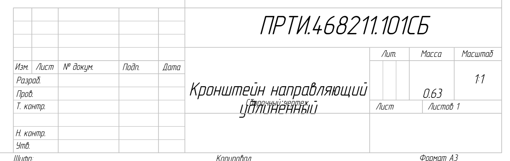
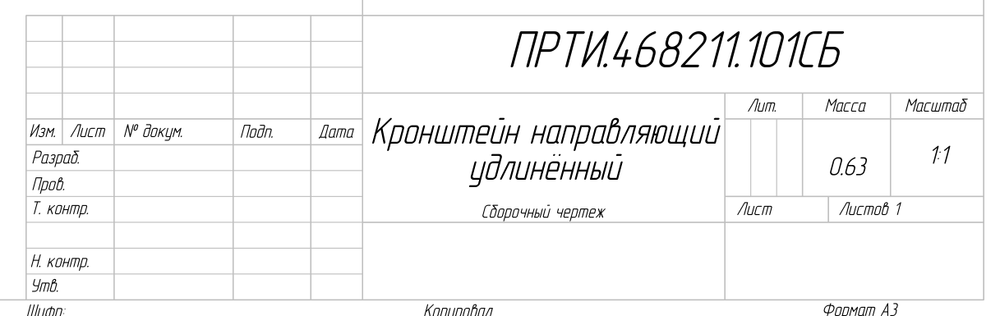
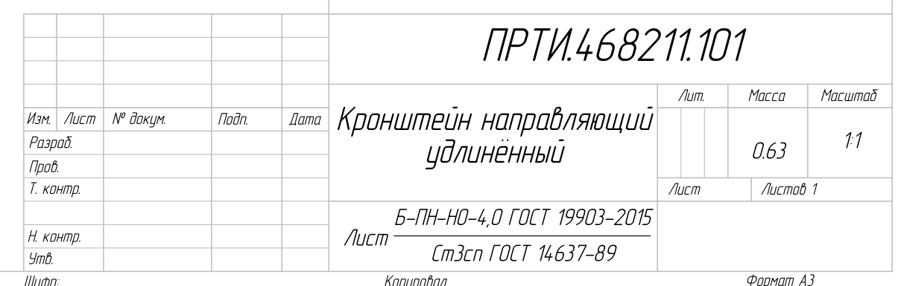
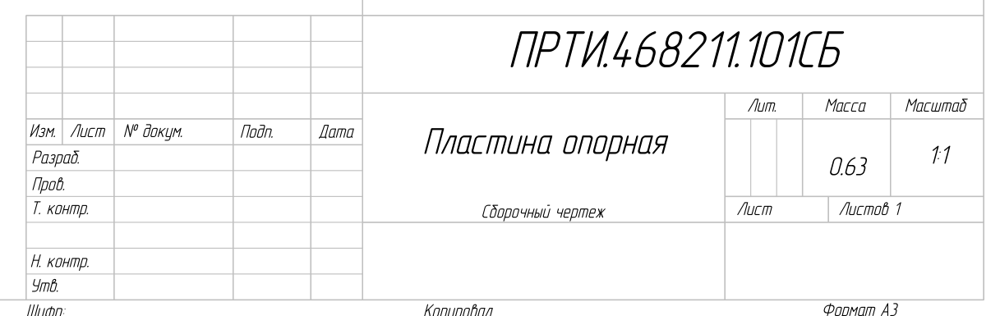
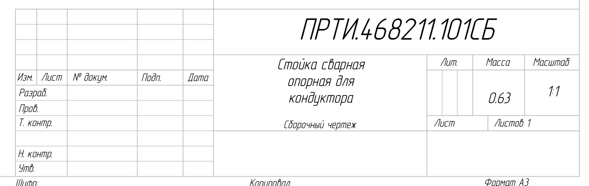
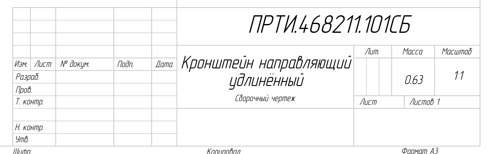
| Наименование | G0 текущая | G1 как SWPlus | G2 подбор |
|---|---|---|---|
| Одна строка | наложение 4,6 мм | промежуток 4,6 мм | промежуток 6,0 мм |
| Две строки | наложение 9,7 мм, вне графы | наложение габаритов 0,5 мм (впритык) | промежуток 0,9 мм по габаритам, визуально 2–3 мм |
| Три строки (3,5 мм) | наложение 7,8 мм | промежуток 0,9 мм | промежуток 2,3 мм |
| Масса, смещение центра | −2,5…−1,8 | +1,3…+1,9 | +0,8…+1,5 |
Габарит в API включает служебные пустые строки разметки, поэтому видимый промежуток больше расчётного.
Вывод. Вариант А работает и с двумя, и с тремя строками при геометрии G2 — у детали и у сборки одинаково. Текущая геометрия с разметкой MProp не работает ни с одной строкой, ни с двумя.
Ограничения варианта А:
- строка шрифтом 5 мм в GOST type A — не длиннее примерно 22 знаков («Кронштейн направляющий» — 66,9 мм из 70), поэтому перенос по правилу плана (Р-2) обязателен;
- окончательные координаты подбираются для всех 9 форматок автотестом, а не по одному A3.
Новые находки для плана
| № | Находка | Серьёзность | Пакет |
|---|---|---|---|
| Н-27 | Форматки 08.09 выставлены под разметку надстройки; разметка MProp сползает во всех 9 форматках (причины 1, 2) | критично | Новый WP-4.6 «Эталон штампа» |
| Н-28 | Текст выходит за графу: наименование шрифтом 5 одной строкой, материал одной строкой (причина 4) | высоко | WP-2.2, WP-3.1, WP-4.6 |
| Н-31 | Графа 1 у деталей и сборок раскладывается по-разному; наложение у сборок (причина 3) | высоко | WP-4.6, решение по раскладке |
| Н-32 | Масса лёгких деталей у надстройки «0,01»; положение массы после MProp нестабильно (причины 5, 6) | высоко | WP-2.1, WP-4.6 |
| Н-33 | Старые чертежи хранят форматку своей версии, шрифт Arial Narrow (причина 7) | средне | Новый WP-4.7 «Перезагрузка форматок» |
| Н-34 | Шаблоны Master отличаются в надписи массы (причина 8; подтверждает Н-13 через API) | средне | WP-4.1 |
Живым прогоном подтверждены и прежние находки плана:
- Н-04 — «Конструктор» стирается и заполняется по кругу;
- Н-05 — «RenameSWP» = 1 у сборки с «СБ»;
- Н-02 — масса двух форматов;
- Н-03 — наименование MProp одной строкой;
- Н-30 — разбор имени «Болт М6…».